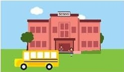

7:30 a.m.Arrival/Donuts & Coffee Conference Room
7:40 a.m.-8:00 a.m. Shadowing of Team 2dgrade Lead-Gaston 5grade Lead-Lawrence 8:00-9:00 a.m.
Tour of Building/ Brief Intro. to Teachers & Students
Usher-Collier Operations
Handbook
Keys to Classroom
9:00-9:20 a.m.Kronos/Leave/Forms
9:20 a.m.-10:40 a.m. Instructional Coaches Meeting Unit Plan/Lesson Plan Templates Curriculum Scope and Sequences Curriculum Frameworks and Resources SharePoint Access/Online Resources Discipline Plan
10:40-12:00 p.m.Work in Classrooms 12:00-12:30 p.m.Lunch 12:30-1:30 p.m.Work in Classrooms 1:30-2:15 p.m.Meeting with Mr. Parks Mr. Sims, AP
Mrs. Lion,
Secretary